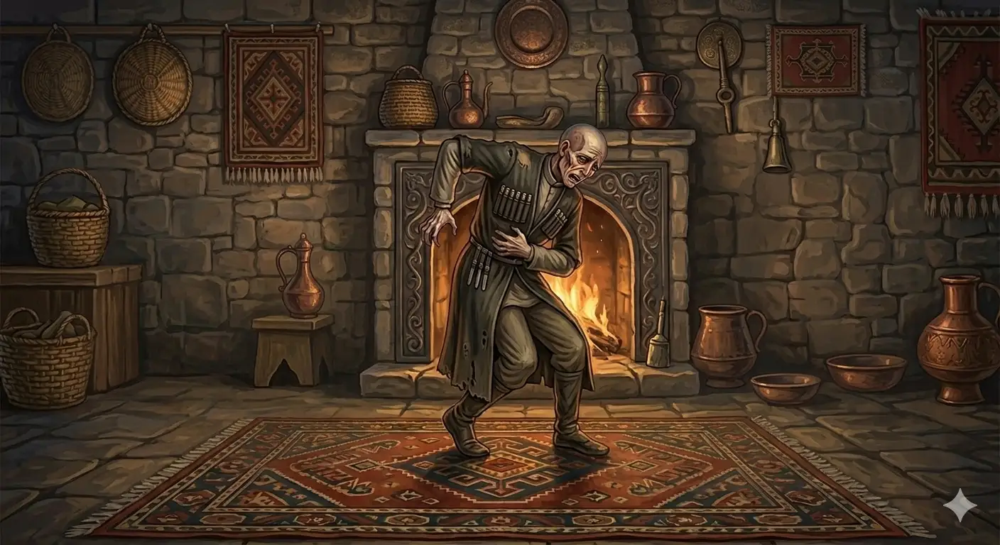

И.А. Дахкильгов. Хьехаме дувцарш - поучительные рассказы-притчи.
И.А. Дахкильгов. Хьехаме дувцарш - поучительные рассказы-притчи. Из ингушского фольклора.

Со везачоа са гийг а еза
Цхьа кулгаша, когаша аьннад: - Хала къахьегаш, сатем боацаш тхо лел, шийгада-а йоаллача гийго вай мел даьр дуъ. Кхы из кхоабаргьяц вай! Керто аьннад: - Ӏовдала ма хила. Гийго чӀоагӀа къахьег. Цунна дӀа мел денна деррига охьаш, дегӀа дӀалуш я из. ЛадийгӀадац когашеи кулгашеи. Гаьг яьсса лаьттай. Из бахьан долаш дегӀ гӀелдала доладеннад. Шоай низ бохаш хайнад кулгашеи когаштеи. Корта бакълийналга тӀаккха кхийттад уж. Сихбенна гаьга яахӀама яла деннад уж, бакъда, дукха меца лоаттаяь че йикъа енна хиннай. ДаахӀама дӀаэца мегадац цунна. Моцалла дӀадаьннад дегӀ, цунца цхьана когаши кулгаши дӀадаьннад. Цудухьа оал наха: "Со везачоа са гийг а еза".
РУССКИЙ
Кто любит меня, тот любит мой желудок
Руки и ноги сказали: - Мы трудимся, не зная покоя, а живот все поедает и совершенно не трудится. Не будем дальше его кормить. Голова сказала: - Не глупите. Живот много трудится. Все, что вы ему даете, он перемалывает и отдает телу. Не послушались руки и ноги. Желудок опустел, тело стало худеть. Руки и ноги почувствовали, что они стали слабеть. Лишь теперь они поняли, что голова была права. Кинулись руки и ноги кормить желудок, а его уже спазмами свело и принять пищи он теперь уже не может. Так и погибли и голова, и тело, а вместе с ними и неразумные руки и ноги. С тех пор и живет пословица: "Кто любит меня, тот любит мой желудок".
ENGLISH
Whoever loves me loves my stomach
The arms and legs complained, 'We work tirelessly, yet the stomach just eats everything and does no work at all. We won't feed it any more.' The head replied, 'Don't be silly. The stomach works very hard. It breaks down everything you give it and gives it to the body.' The arms and legs did not listen. The stomach emptied and the body began to waste away. The arms and legs felt themselves growing weaker. Only then did they realise that the head had been right all along. They rushed to feed the stomach, but it was already convulsing and could no longer accept food. So the head and body perished, along with the foolish arms and legs. The proverb 'He who loves me loves my stomach' has lived on since then.
НОХЧИЙН
Со везачун сан гай а йеза
Цкъа куьйгаша, когаша аьлла: - Хала къахьоьгуш, синтем боцуш тхо лел, деш хӀумма а доцуш йоллучу гайно вай мел динарг дуу. Кхин иза кхобур йац вай! Коьрто аьлла: - Ӏовдал ма хила. Гайно чӀогӀа къахьоьгу. Цунна дӀа мел делларг дерриге охуш, дегӀана дӀалуш йу иза. ЛадоьгӀна дац когашший куьйгашший. Гай йаьсса лаьттина. И бахьана долуш дегӀ гӀелдала доладелла. Шай ницкъ бухий хиъна куьйгашна а, когашна а. Корта бакълийний тӀаккха кхетта уьш. Сихделла гайна йуухӀума йала доьлла уьш, бакъду, дукха меца латтийна чоь йакъайелла хилла. ДаахӀума дӀаэца ца делла цуьнга. Мацаллех дӀадаьлла дегӀ, цуьнца цхьана когашший куьйгашший дӀадойлла. Цундела олу наха: "Со везачун сан гай а йеза".
ПОГОВОРКИ
Гийг ца езачоа корта бийзабац. Кто не заботится о желудке, тот не любит и голову. He who does not look after his stomach does not love his head either. Гай ца езачун корта а безна бац.Говрана фуъ беннар гаьнагӀа ваьннав. Кто сытно коня накормил, дальше других уехал. He who has fed his horse well rides further than the others. Говрана хӀоъ белларг генаха ваьлла.Даар – дегӀан кхача, наб – сина кхача. Еда – пища для тела, сон – пища для души. Food is nourishment for the body; sleep is nourishment for the soul. Даар – дегӀан кхача, наб – синан кхача.Даьссача хабарал дикъа худар тол. Густая каша лучше пустой болтовни. Thick porridge is better than empty chatter. Даьсс хабарал дуькъа худар тоьлу.Даьтта ца хьекхача, чарх кхестаяц. Не смажешь и колесо не крутится. If you don’t grease it, the wheel won’t turn. Даьтта ца хьаькхча, чарх ца хьийза.Диссалца ца диа даар – даар дац. Сытость – это когда еще остается недоеденная пища. You’re only truly full when there’s still food left uneaten. Диссалца ца диъна даар – даар дац.Камаьрша дӀаденначо эшаденна кӀоаг а баьккхабац, сутара ваьнна чу дитачунна совдаьнна бог а яьккхаяц. У щедрого отдающего не убыло, у скупого от сбереженного не прибыло. The generous giver loses nothing, whilst the miser gains nothing from what he saves. Комаьрша дӀаделлачун эшна кӀаг а баьккхина бац, сутара ваьлла чу диттиначун совдаьлла бог а йаьккхина йац.Китаца эйхьаза ма вала. Не потакай своему желудку. Don’t indulge your stomach. Гайца эвхьаза ма хила.Моцалла леш уллачунна дошо лоамаш эшац. Умирающему с голоду не нужны золотые горы. A man dying of hunger has no need for mountains of gold. Мацалла леш волчунна дашо лам эшац.Хабарал худар тол. Лучше кашу есть, чем много болтать. It is better to eat porridge than to talk at length. Хабарал худар тоьлу.ХьоашалгӀа воадаш, виза вода эзди саг. Благородный человек в гости идет сытым. A noble man goes to visit others on a full stomach. Хьошал воьдуш, вуьзна воьду оьзда стаг.Чубеллар – низ, гибеллар – мухь. Что принял вовнутрь – сила, что взвалил на плечи – груз. What you take in is strength; what you shoulder is a burden. Чуболлург – ницкъ, гиболлург – мохь.Ше хьоалчагӀа вийхача, даькъазачо аьннад: “Яь тӀа хоаве вех со”. Несчастного (обездоленного) пригласили на пиршество, и он сказал: “Приглашают, чтобы я в котлах мясо варил”. A poor man was invited to a feast, and he said: ‘They’re inviting me to boil meat in the cauldrons.’ Ша хьошал вийхича, декъазчо аьлла: «Йайн тӀе хааван воьху со».Ӏа хьайна хӀама ца юэ, Ӏа хьайна (сона) мангал а хьокхаргбац. Не поешь для себя (для силы) – не сможешь и накосить себе (мне). If you don’t eat for yourself (for strength), you won’t be able to earn a living for yourself (for me). Ахь хьайна хӀума ца йаахь, ахь хьайна (суна) мангал а хьокхур бац.